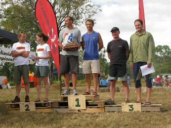

Dear Rogainer,
In this newsletter:
- Kiwis win Australasian Championships
- No NZ Champs in 2013
- Events coming up
Kiwis win Australasian Championships
Congratulations to Phil Wood and Robert Jarvis who recorded placings of
1st overall, 1st MO, and 1st MV 
with
3140pts in the Australasian Championships run near Cairns in Far North
Queensland weekend of 22nd/23rd June. Kiwis have competed with some
distinction in previous Australian Championships but this was the first
official Australasian event for Australia and New Zealand
combined. Have a read of Phil’s
account of their experiences.
The organising team led by Mike Coleman put on a fantastic event with
great terrain, an excellent and challenging map, and plenty of
nutritious food both at the Hash House and at the two very welcome All
Night Cafes out in the field. Take a look at the results,
map,
and pictures.
Additional Kiwi podium placings were:
- Viv Prince with Richard Robinson (Australia), 2720pts, 6th
overall, 1st XSV, 2nd XV, 3rd XO
- Emma and Guy de Lacey, 2250pts, 19th overall, 2nd XSV, 3rd XV
A total of 16 NZ Rogainers competed and the remaining NZ placings were:
- Mark Struthers, Annette Windross, Dennis Litt, Henry Beex,
1880pts, 27th overall
- Trevor Merrifield, Andrew McGowan, 1710pts, 34th overall
- Pete Squires, Anne & Bill Kennedy, 1590pts, 37th overall.
First, by default, in the XUV (65+) category introduced this year. No
other UV teams fronted.
- Annie Sanderson, Nick Collins, 1320pts, 45th overall
No NZ Championships this year
Regretfully, there will be no NZ Champs this year. Having
investigated all options we are unable to offer a viable event in 2013.
However we are working towards a New Zealand Championship event for
2014 and beyond. Stay tuned for future announcements.
Events coming up
Hamels
Haunts III
Dunedin, Sunday July
28th
Organised
by Matt Bixley again, this
year’s Hamels Haunts is a TRAINING event and MTB friendly. It is to
give people
a chance to practice navigating, route finding, riding, transitions,
team-work
etc. in a non-competitive environment.
You choose your start time
(between 1pm and 3pm), you’ll be handed your map and go from there. Map
reading, navigation, trekking and riding will be at levels expected for
the
Dunedin Mazda Adventure Race and for the Spring Challenge. Checkpoints
will
vary from very easy to some more difficult ones for those that want
more of a
challenge. Coaching/Advice will be given to groups that would like it
before
they head out.
Cost
$10 (under 15 free),
there will be soup/bread at the finish, no prizes so it’s only bragging
rights,
and I’m not even sure if there will be results, but there probably will
be. See
http://runlongergeek.wordpress.com/rogaine/
and https://www.facebook.com/events/269102113232051/
for up-to-date information. Matt's contact is matt.bixley@agresearch.co.nz
or
phone 021 046 9255.
11th World Rogaining Championships
Russia, 26th - 27th July
Only a week away now. Vivienne Prince, partnered with
Richard Robinson (Australia), remains the sole New Zealand
representative. Best wishes Viv, go well. See the website at http://wrc2013.com/.
Equestrian Rogaine 2013
Bottle Lake Forest (Burwood, Christchurch), Sunday 4th August
It is on
again for a second year - an equestrian rogaine in
support of Darfield High School’s rural college. Do you own a horse? Do
you know someone who owns a horse? If so, then this 3hr navigational
adventure on horseback, organised by Stu Payne and Carol Fowler, is for
you. See http://www.darfield.school.nz/curriculum/special-programmes/rural-college/
for complete information and an entry form. Entries close Wednesday
31st July.
Broken River Ski Rogaine
Broken River Ski Field, Saturday 10th August
Calling all rogainers who can
ski or skiers who like a map
challenge with their skiing! The annual Broken River Ski Rogaine is on
Saturday 10th August. See the NZRA
event calendar for more detail. If you’re new to Broken River ski field
check out http://www.brokenriver.co.nz/;
for more info before the day contact the organiser and PAPO club member
Sally Dickson, membership@brokenriver.co.nz,
or phone 338-0801. Hope to see some new faces joining in this year!
Mt Outdoors Wanaka Rogaine
Bannockburn, Central Otago, Saturday 14th September
The usual Spring
Rogaine organised by Ed Stevens and Terry
Davis this time in the Bannockburn region, near Cromwell. There will be
12hr, 6hr and family 3hr events, and a 6hr MTB option, following the
classic Rogaine format in inspiring Central Otago landscapes. See the
Highland Events website, http://www.highlandevents.co.nz/rogaine,
for detailed information and online entry.
Welly Afterwork Series, April to November
A series of 3hr
afterwork Rogaines at monthly intervals in the
Wellington region under the auspices of O Hutt Valley. The next event
is on Thursday 15th August. If any non-Wellingtonian happens to be in
Wellington on the dates of these events they are sure to be most
welcome to join in the fun. See the Maptalk calendar, http://www.maptalk.co.nz/events/default.cfm?t=Rogaine,
for details.
Event Calendars
Keep your eye on:
- the NZRA website event calendar at http://www.rogaine.org.nz/ and
- the Maptalk website, http://www.maptalk.co.nz/events/default.cfm?t=Rogaine
for details of future rogaines.
Welly Afterwork Results
The third event
in the 2013 Welly Afterwork Series, run on
Wednesday 19th June, attracted 87 people. See the report by organiser
Mary McBride and the results at http://www.mapsport.co.nz/wellyrog/awrog13res.html.
By the time you read this newsletter results for the fourth event, 18th
July, should also be available.
Regards,
NZRA (http://www.rogaine.org.nz/)